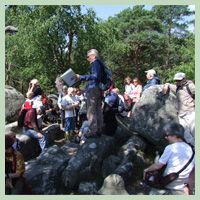

Qui sommes-nous ?
L’association des Amis de la Forêt de Fontainebleau (AFF) contribue à protéger les peuplements végétaux et le patrimoine historique du massif forestier de Fontainebleau. Elle entretient les sentiers Denecourt-Colinet balisés de bleu et invite chaque année un large public d’adultes et de jeunes à découvrir la forêt à travers les promenades guidées , conférences et expositions. Les Amis de la Forêt de Fontainebleau s’efforcent de remédier aux atteintes dont le massif forestier est victime, notamment par le biais de leur « OBSERVATOIRE de la forêt ». Porte-parole des différents usagers, les AFF sont des interlocuteurs reconnus des pouvoirs publics et de l’ONF.
Le Président, Denis Bauchard
Forêt de la Commanderie
À Larchant il n’y a pas que l’Éléphant et la Dame Jouanne, il y a bien d’autres lieux recélant des curiosi-tés géologiques et des témoignages de la fréquentation humaine de la préhistoire à l’histoire de la montagne. Promenade de 7 km environ. Départ 9h30 parking de Bois d’Hyver, parcelle 143, pli J2 retour vers 12h30 Sortie animée par Jacques Simon.
Dernières publications
La Feuille Verte : Vous y trouverez les dernières informations sur la vie de l'association. La Voix de la Forêt Les adhérents vont recevoir comme chaque année la revue de l’association. Le numéro 2013 comprend, outre les informations sur la vie de l'association, des articles sur l'histoire et la biodiversité du massif bellifontain et un dossier complet : "La forêt et ses sentiers".
Récapitulatif des promenades du 1er semestre 2014
Vous pouvez consulter le récapitulatif des promenades Le fichier pdf
Dernières nouvelles de la forêt